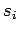
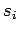
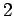
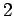

A continuación se listan algunas  útiles, de propósito general. En todos los caso
útiles, de propósito general. En todos los caso  es un parámetro de ponderación que nos permite establecer las importancias relativas de las entradas; se restringe a
es un parámetro de ponderación que nos permite establecer las importancias relativas de las entradas; se restringe a
 y
; También definimos  como una variable auxiliar que define el sentido del efecto de variar la entrada
y
; También definimos  como una variable auxiliar que define el sentido del efecto de variar la entrada  sobre la saluda:
sobre la saluda:
Para analizar las diferencias entre las distintas opciones, definimos y como las sumas de los pesos de las entradas de relaciones crecientes y decrecientes respectivamente:
Opciones 3 y 4 son modificaciones de las opciones 1 y 2: Hemos remplazado  por una función genérica
que debe ser monótonamente creciente y tal que y . A manera de ejemplo, supóngase
; si entonces los valores menores de
por una función genérica
que debe ser monótonamente creciente y tal que y . A manera de ejemplo, supóngase
; si entonces los valores menores de  serán subvalorados, y los valore mayores serán sobrevalorados.
serán subvalorados, y los valore mayores serán sobrevalorados.
La Figura 2.3 muestra una comparación gráfica entre estas opciones. Se han seleccionado , , , , , , y se han graficado () para tres valores de : , .
Claramente, las opciones  y  son hiperplanos con diferentes pendientes y desplazamientos. La opciones
y  son hiperplanos con diferentes pendientes y desplazamientos. La opciones  y son hipersuperficies que pueden verse como deformaciones de los planos originales.
y son hipersuperficies que pueden verse como deformaciones de los planos originales.